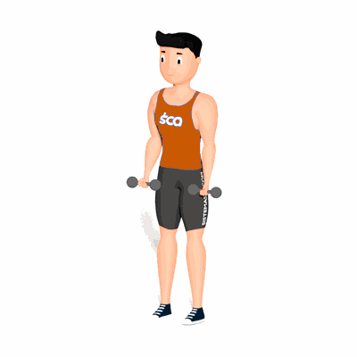

Rosca Alternado e Direto

O exercício tem como objetivo trabalhar com maior intensidade o fortalecimento e hipertrofia dos músculos do bíceps.
Ficha Técnica
Tipo: Musculação
Grupo Muscular: Bíceps
Aparelho: Nenhum
Músculos: Nenhum
Como realizar
- Utilize dois dumbbells ou halteres;
- Posição em pé, cabeça e costas alinhadas, joelhos semiflexionados, pés ligeiramente afastados;
- Braços estendidos e, com os antebraços posicionados em supinação;
- Realize o movimento de Rosca Alternada, que consistem em fazer a flexão unilateral do cotovelo levando o punho em direção ao ombro. Retorne à posição inicial de forma controlada e realize novamente com o membro contralateral;
- Novamente retorne à posição inicial e realize o movimento de Rosca Direta, que consiste em fazer a flexão simultânea dos cotovelos levando os punhos em direção aos ombros;
- Retorne a posição inicial e repita os movimentos alternando entre o movimento de Rosca Alternada e a Direta.
 RC STORE
RC STORE